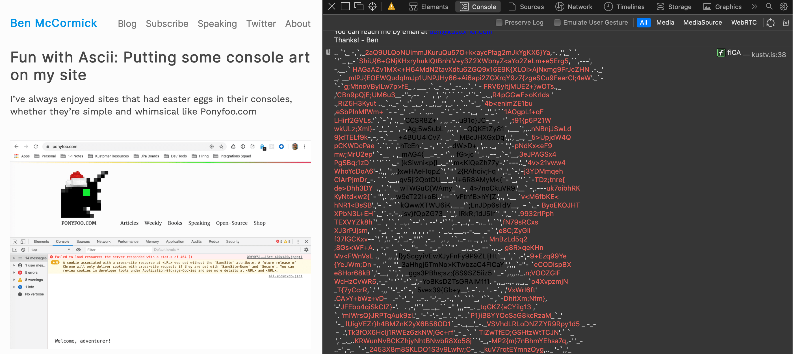

DIG 245 View Source
To view the source of
Radio Garden
Right click
Click on inspect element
View the HTML and CSS code in the pop up window
Dev Tools
Observe any errors through the console.
Experiment with new ideas by making temporay changes in the HTML and CSS.
Understand the features that developers used to create cool webpages!
Metaphor: Messing with the clock
With the developer tool, you can look into the past on what has been done, but also experiment with what can be done for the future.
Cool console art
Ben McCormick

Favorite Animal